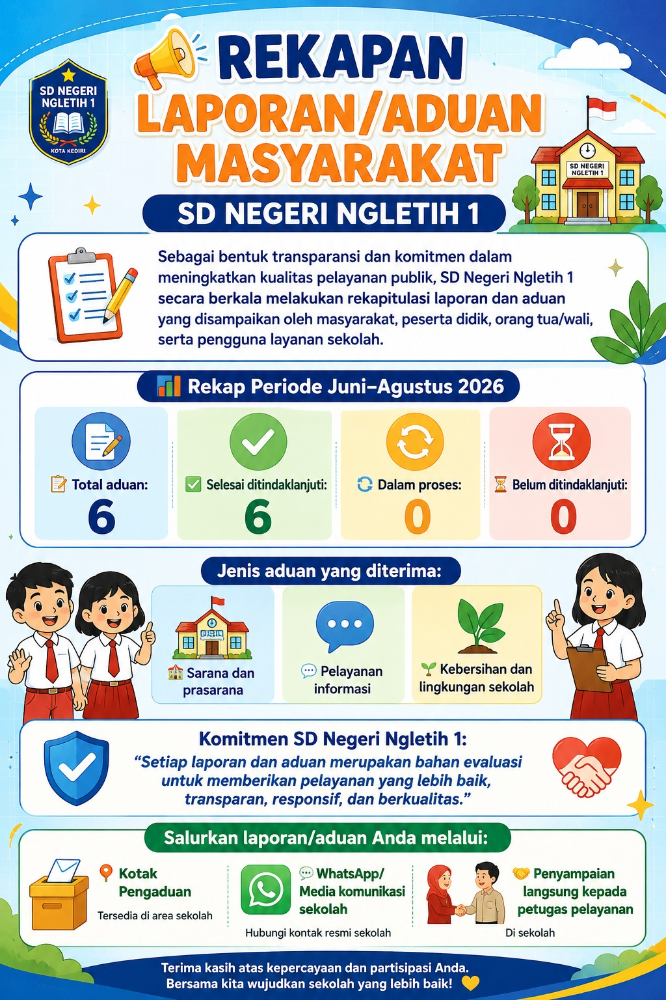

SDN Ngletih 1 menyediakan layanan pengaduan untuk menerima kritik, saran, maupun laporan dari masyarakat demi meningkatkan kualitas pelayanan sekolah.
Isi Form PengaduanKami terbuka terhadap berbagai bentuk masukan dari masyarakat untuk meningkatkan kualitas pelayanan sekolah.
Menyampaikan laporan mengenai pelayanan sekolah yang membutuhkan perhatian dan tindak lanjut.
Memberikan masukan dan ide untuk meningkatkan mutu pelayanan SDN Ngletih 1.
Memberikan penghargaan atau apresiasi kepada guru maupun sekolah atas pelayanan yang diberikan.

Sebagai bentuk transparansi, akuntabilitas, dan komitmen dalam meningkatkan kualitas pelayanan publik, SDN Ngletih 1 secara berkala melakukan rekapitulasi laporan dan aduan yang disampaikan oleh masyarakat, peserta didik, orang tua/wali, serta pengguna layanan sekolah.
Pada periode Juni–Agustus 2026, SDN Ngletih 1 menerima sebanyak 6 laporan/aduan masyarakat. Seluruh laporan tersebut telah mendapatkan tindak lanjut.
Adapun jenis aduan yang diterima meliputi sarana dan prasarana, pelayanan informasi, serta kebersihan dan lingkungan sekolah.
Setiap laporan yang masuk menjadi bahan evaluasi bagi sekolah untuk melakukan perbaikan dan peningkatan kualitas pelayanan. Dalam menindaklanjuti setiap aduan, SDN Ngletih 1 mengedepankan komunikasi, koordinasi, respons yang tepat, serta penyelesaian yang berorientasi pada kenyamanan dan kepentingan seluruh warga sekolah.
“Setiap laporan dan aduan merupakan bahan evaluasi untuk memberikan pelayanan yang lebih baik, transparan, responsif, dan berkualitas.”
SD Negeri Ngletih 1 juga mengajak seluruh masyarakat, peserta didik, dan orang tua/wali untuk turut berpartisipasi dalam memberikan saran, masukan, maupun laporan apabila terdapat hal-hal yang perlu diperbaiki dalam pelayanan sekolah.
Laporan atau aduan dapat disampaikan melalui kotak pengaduan, WhatsApp/media komunikasi resmi sekolah, maupun secara langsung kepada petugas pelayanan.
Melalui keterbukaan terhadap kritik, saran, dan pengaduan, SD Negeri Ngletih 1 terus berupaya mewujudkan pelayanan pendidikan yang bersih, transparan, responsif, nyaman, dan berkualitas.
Terima kasih atas kepercayaan dan partisipasi seluruh masyarakat dalam mendukung peningkatan kualitas pelayanan SD Negeri Ngletih 1.
SDN Ngletih 1 mengajak seluruh masyarakat, peserta didik, dan orang tua/wali untuk turut berpartisipasi dalam meningkatkan kualitas pelayanan sekolah.
Laporan atau aduan dapat disampaikan melalui kotak pengaduan, WhatsApp/media komunikasi resmi sekolah, maupun secara langsung kepada petugas pelayanan.
Sampaikan Pengaduan